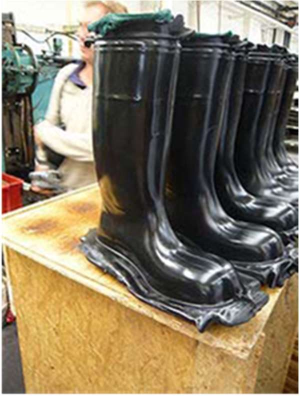

Élastomères et caoutchouc naturel
Un joint de seringue, un pied prothétique, un gant d'examen : ces pièces s'écrasent, s'étirent, puis reviennent à leur forme. Aucun métal, aucune céramique ne fait cela. Il faut une famille à part : les élastomères.
Élastomère : polymère organique ou minéral (silicone) à base de gomme collante, ayant des propriétés élastiques après réticulation. Le terme caoutchouc naturel (NR) est un synonyme usuel d'élastomère. En toute rigueur, les élastomères ne font pas partie des matières plastiques.
Le caoutchouc naturel est du polyisoprène : son motif est \(\mathrm{-CH_2-C(CH_3)=CH-CH_2-}\), avec une double liaison par motif.
| Le latex brut | Propriétés du caoutchouc naturel |
|---|---|
| se récolte par une « saignée » : incision de l'écorce du tronc qui sectionne les vaisseaux laticifères | flexible à basse température |
| est collant lorsqu'il est exposé au soleil | résilience élevée |
| fond à température élevée | faible résistance aux huiles et à l'oxydation |
| devient cassant à basse température | excellent combustible |
| brunit et se coagule lorsqu'il est maintenu à l'air | très sensible à l'action de l'ozone et du dioxygène |
Applications
Applications industrielles du caoutchouc citées au cours : corde de bungee (capacité de remonter de 85 %), catapultes sur les porte-avions, bâtiments et ponts (appuis), coussins de montage et amortisseurs, transmission de puissance (accouplement flexible, courroies), pneus d'avions.
Côté médical et prothétique, le cours montre des pièces en silicone, élastomère minéral : pieds prothétiques, masques de visage, une tête humaine en caoutchouc artificiel et un implant en silicone.

À retenir
Élastomère = polymère (organique ou minéral, silicone) à base de gomme collante, élastique après réticulation. Caoutchouc naturel (NR) = polyisoprène, tiré du latex de l'hévéa par saignée. Propriétés du NR : flexible au froid, résilience élevée, faible résistance aux huiles et à l'oxydation, combustible, sensible à l'ozone et au dioxygène.